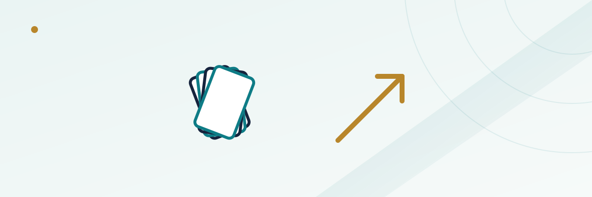

Four Card Poker's Upside-Down Hand Rankings: Why Three of a Kind Beats a Flush

If you've played five-card poker games on a casino floor — Three Card Poker, Ultimate Texas Hold'em, Caribbean Stud — your instincts for hand rankings are wired a certain way: flush beats straight, straight beats three of a kind, and nothing beats a straight flush except quads. Sit down at Four Card Poker and every one of those assumptions gets flipped. Here, a bare three of a kind outranks a flush, and a four of a kind outranks a straight flush outright. It isn't a typo on the felt — it's math, and understanding why makes the rest of the game click into place fast.
In this guide
How a hand of Four Card Poker is dealt
Four Card Poker is played with a single standard 52-card deck. After players place an ante bet (and, optionally, a separate Aces Up side bet), the dealer deals five cards face down to each active player and six cards to themselves — five face down and one face up, visible to the whole table before anyone has to act. Both the player and the dealer then build their best possible four-card hand out of the cards they were dealt. That one visible dealer card is the only piece of information you get before deciding what to do next, which is a much thinner read than the two visible dealer cards you'd get in blackjack, or the full board you'd see in Ultimate Texas Hold'em before your final bet.
The ante and play decision
After looking at your five cards and the dealer's lone up-card, you have exactly one decision: fold and forfeit your ante, or make a "play" wager of one, two, or three times your ante. There's no additional card dealt after this point and no second decision — you size the play bet once, based on what you're holding and that single dealer up-card, and then everything is revealed. The dealer has no qualifying hand requirement in Four Card Poker — unlike Three Card Poker, where a dealer who doesn't have at least a queen high pushes the play wager back automatically, here the dealer's hand is always fully formed and always goes head-to-head against yours. If your hand ties or beats the dealer's four-card hand, both your ante and play bets win even money (1 to 1); if the dealer's hand is better, you lose both.
The hand ranking order — and why it's inverted
From best to worst, a four-card hand in this game ranks: four of a kind, straight flush, three of a kind, flush, straight, two pair, and pair. Compare that to standard five-card poker, where the order runs straight flush, four of a kind, full house, flush, straight, three of a kind, two pair, pair (there's no full house possible with only four cards, so that rung disappears entirely).
| Rank | 5-card poker order | Four Card Poker order |
|---|---|---|
| 1 (best) | Straight flush | Four of a kind |
| 2 | Four of a kind | Straight flush |
| 3 | Full house | Three of a kind |
| 4 | Flush | Flush |
| 5 | Straight | Straight |
| 6 | Three of a kind | Two pair |
| 7 | Two pair | Pair |
Two things flip, and both come down to raw odds with only four cards to work with. First, four of a kind becomes rarer, in relative terms, than a straight flush, because there are fewer four-card combinations overall and the mathematical gap between the two hands' frequencies narrows compared to five-card poker — the game's designers set the ranking to match actual rarity, and in the four-card deal, quads edge out ahead. Second, and more noticeably at the table, three of a kind becomes harder to make than a flush or a straight with only four cards dealt — there are simply more ways to land four cards of mixed suits that still complete a flush or straight than there are to land three matching ranks plus one more card. Fewer ways to make a hand means it has to rank higher, which is exactly why three of a kind jumps above flush and straight here instead of sitting below them.
The ante bonus and the Aces Up side bet
Separate from winning or losing against the dealer, your ante bet also pays a bonus any time you hold three of a kind or better — win, lose, or tie against the dealer's hand. At the baseline paytable used on most Massachusetts- and New Jersey-licensed tables: three of a kind pays 2 to 1, a straight flush pays 20 to 1, and four of a kind pays 25 to 1 on the ante bet alone, on top of whatever the ante and play bets do against the dealer. Some casinos post slightly different bonus odds, so it's worth checking the felt before you sit down.
The optional Aces Up side bet is independent of the dealer entirely — it pays purely on your own hand, win or lose against the house, as long as you hold a pair of aces or better. Payouts run from roughly 1 to 1 for a pair of aces up to as much as 50 to 1 for four of a kind, with the exact numbers in between varying meaningfully by casino and paytable version. According to industry odds analysis, the house edge on Aces Up ranges from under 2% to just over 6% depending on which paytable a given casino runs — one of the widest spreads of any single side bet in the building, which makes it worth comparing paytables across casinos if you plan to play it regularly rather than assuming one casino's version matches another's.
A worked-through hand
Say you're dealt 10-10-7-4-2, and the dealer's up-card is a 9. Your best four-card hand is a pair of tens (using 10-10-7-4, discarding the 2). That's a modest holding — not strong enough to justify a maximum 3x play bet, since a lone pair of tens loses to anything from a stronger pair up through four of a kind, and the dealer's single visible 9 doesn't tell you much either way. A disciplined player makes a small 1x play here rather than folding outright, because a pair of tens still beats a dealer hand with no pair at all, which happens often enough with only four cards in play to be worth staying in cheaply rather than surrendering the ante for nothing.
Basic strategy for the play decision
Because there's only one decision point and no additional cards to react to, Four Card Poker's basic strategy is simpler to memorize than Three Card Poker's or Ultimate Texas Hold'em's multi-stage betting. As a general guide: make the full 3x play with any hand of two pair or better, since those hands are already favorites against an average dealer hand; make a smaller 1x play with most single-pair hands, since a pair still beats a large share of dealer hands with no pair; and fold hands with no pair and nothing better than roughly a jack-high, since those lose to most of what a six-card dealer draw tends to produce. None of this guarantees a winning session — the house edge on the ante/play bet runs in the low single digits with correct strategy, similar in scale to other 4-card and 3-card table poker variants — but playing close to this strategy keeps you near that number instead of giving the house a much larger edge through random folds and raises.
Frequently asked questions
Does the dealer need a minimum hand to qualify in Four Card Poker?
No. Unlike Three Card Poker's dealer-qualifying rule, the dealer in Four Card Poker always forms a hand and always plays against you, regardless of how weak that hand is.
Why does three of a kind beat a flush in this game?
With only four cards dealt, three of a kind is mathematically harder to make than a flush or a straight, which is the opposite of the relationship in standard five-card poker. The ranking order follows actual rarity, so the harder-to-make hand ranks higher.
Can I play the Aces Up side bet without making an ante bet?
Rules vary by casino, but Aces Up is typically offered as an optional add-on alongside the ante bet rather than a fully standalone wager — check the table's posted rules before sitting down.
Is there a full house in Four Card Poker?
No. A full house requires five cards (three of one rank plus two of another), so it simply doesn't exist as a possible hand when you're only ever building a four-card hand.
How is this different from Three Card Poker?
Three Card Poker deals three cards, has a dealer-qualifying rule (typically queen-high or better), and uses a single fixed-size play bet equal to the ante. Four Card Poker deals four-card hands from a larger five/six-card deal, has no dealer qualifier, and lets you size the play bet from 1x to 3x your ante based on your own hand strength.